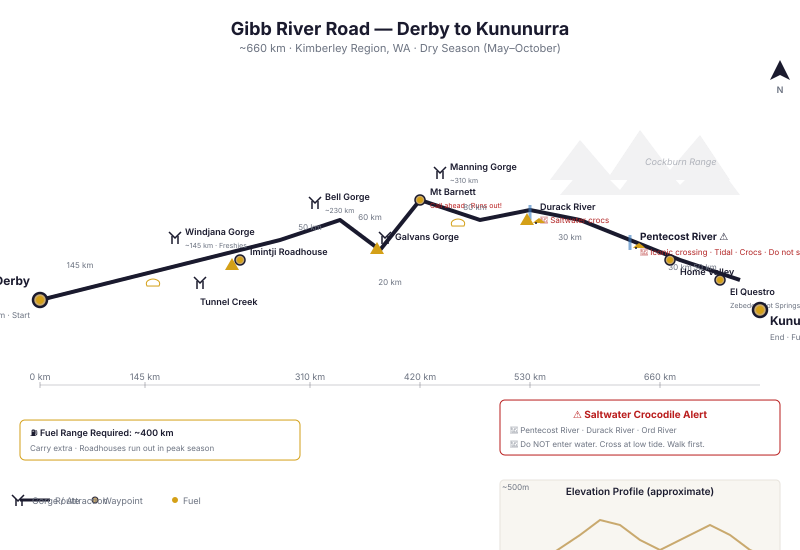

📑 Contents
Gibb River Road — Map & Track Reference

Gibb River Road — gorges, river crossings, fuel stops, and distances (approx. 660 km Derby to Kununurra)The Gibb River Road is the Kimberley's most famous 4WD route, a 660 km gravel road cutting through the ancient sandstone ranges of northern Western Australia from Derby to Kununurra. Unlike the desert tracks of central Australia, the Gibb is a graded (though often rough) road that passes through stunning gorge country, working cattle stations, and remote roadhouses.
Despite being a relatively well-travelled route, the Gibb demands preparation — corrugations destroy vehicles, river crossings contain saltwater crocodiles, and fuel can be unpredictable.
Key Facts
| Attribute | Detail |
|---|---|
| Location | Kimberley region, WA. Derby (west) to Kununurra (east). |
| Distance | ~660 km |
| Surface | Graded gravel, sections of bitumen (increasing each year) |
| Typical duration | 5–7 days with gorges |
| Best season | May–October (dry season) |
| Wet season | November–April — roads closed, creek crossings dangerous |
| Fuel stops | 6 on route (Derby, Imintji, Mt Barnett, Drysdale turnoff, El Questro, Kununurra) |
| Crocodile territory | Estuarine (saltwater) crocodiles in Pentecost and Durack Rivers |
Route Direction
The route is described here west-to-east (Derby → Kununurra). Most travellers do it in this direction.
Major Gorges & Attractions (West to East)
Windjana Gorge
- Distance from Derby: ~145 km
- Access: Sealed road (not on the Gibb itself — side trip south)
- Highlights: Freshwater crocodiles in the pool. Spectacular limestone gorge.
- Camping: Yes (fees apply, Windjana Gorge National Park)
- Crocs: Freshwater only — safe to swim but check with rangers
- Time required: 1–2 hours walk
Tunnel Creek
- Distance from Derby: ~160 km
- Access: Side track south of the Gibb (near Windjana turnoff)
- Highlights: Walk-through cave system (750 m tunnel). Torches/headlamps essential. Stalactites, Aboriginal history.
- Camping: No on-site camping
- Time required: 1–2 hours
- Hazards: Submerged sections require wading. Sharp rocks. Watch for freshwater crocs.
Bell Gorge
- Distance from Derby: ~230 km (via Gibb turnoff south)
- Access: 15 km gravel track south from the Gibb
- Highlights: Tiered waterfall, swimming hole. One of the best swimming gorges in the Kimberley.
- Camping: Yes (Bell Gorge Wilderness Campground — fees apply)
- Time required: 1–3 hours walk + swim
Galvans Gorge
- Distance from Derby: ~290 km
- Access: 1 km from the Gibb — very accessible
- Highlights: Small, pretty gorge with waterfall. Easy stop.
- Camping: No on-site camping
- Time required: 30 minutes
Manning Gorge
- Distance from Derby: ~310 km (Mt Barnett Roadhouse area)
- Access: Park at Mt Barnett Roadhouse. 30-minute walk or swim across the pool.
- Highlights: Best swimming gorge on the Gibb. Large pool, waterfall, Aboriginal rock art near campsite.
- Camping: Yes (Manning Gorge campground — popular, book ahead in peak season)
- Time required: Half-day walk + swimming
Barnett River Gorge
- Distance from Derby: ~330 km
- Access: 1.5 km walk from Gibb
- Highlights: Less visited, peaceful. Good swimming.
- Camping: No on-site camping
Mt Barnett Roadhouse
- Distance from Derby: ~310 km
- Services: Fuel, limited supplies, camping (very basic)
- Notes: Call ahead for fuel availability. Expensive. Can run out in peak season.
Pentecost River Crossing
- Distance from Derby: ~530 km
- Highlights: Iconic photo spot — the Gibb crosses the wide tidal river. The famous star pickets mark the crossing.
- Crocs: Saltwater crocodiles present. Do not enter the water at any tide. Cross quickly and do not stop mid-crossing.
- Depth: Tidal — 0.5–2.0 m depending on tide. Cross at low tide if possible.
- Time required: 10 minutes crossing + photos
Home Valley Station
- Distance from Derby: ~560 km
- Services: Fuel (limited), accommodation, camping, restaurant
- Notes: Working cattle station turned tourism operation. Good stop for a meal.
El Questro
- Distance from Derby: ~610 km
- Services: Fuel (expensive), accommodation, camping, hot springs
- Highlights: Zebedee Hot Springs (natural thermal pools, fee applies). Champagne. Or just the hot springs.
- Notes: Privately owned. Entry fee applies (~$15/vehicle). Multiple gorge walks within the property.
Fuel Stops
| Location | Distance from Derby | Fuel Type | Notes |
|---|---|---|---|
| Derby | 0 km | All | Full services. Fill everything. |
| Imintji Roadhouse | ~180 km | Diesel, ULP | Limited hours (8:00–16:00 typically). Call ahead. |
| Mt Barnett Roadhouse | ~310 km | Diesel, ULP | Very expensive. Limited hours. Call ahead — runs out frequently. |
| Drysdale River turnoff | ~430 km | Diesel, ULP | Roadhouse at the turnoff to Drysdale Station. Expensive. |
| Home Valley Station | ~560 km | Diesel, ULP | Limited hours. |
| El Questro | ~610 km | Diesel, ULP | Very expensive. Tourist prices. |
| Kununurra | ~660 km | All | Full services at eastern end. |
Fuel range required: ~400 km minimum. Between roadhouses the gap can be 130–150 km, but if one is closed or out of fuel, the next gap doubles. Carry a minimum 40 L extra.
Water Crossings
| Crossing | Distance from Derby | Croc Risk | Notes |
|---|---|---|---|
| Lennard River | ~130 km | Freshwater croc | Concrete causeway. Watch for debris wet season. |
| Isdell River | ~190 km | Freshwater | Deep pool west side. |
| Hann River | ~220 km | Freshwater | Wide, shallow crossing. |
| Gibb River / Barnett | ~330 km | Freshwater | Multiple crossings. |
| Durack River | ~500 km | Saltwater croc | Tidal. Check depth at crossing poles. Crocodiles present. |
| Pentecost River | ~530 km | Saltwater croc | Most famous crossing. Tidal. Saltwater crocs. Do not enter water. |
| King River | ~600 km | Freshwater | Usually shallow. |
| Ord River | ~640 km | Saltwater croc | Near Kununurra end. |
For ALL crossings: Walk first with a stick. Check for crocodile slide marks on banks. Cross at low tide for tidal rivers. Never stop mid-crossing.
Permits
| Permit | Required | Cost (2025) | Notes |
|---|---|---|---|
| Gibb River Road itself | None | Free | Public road. No permit required. |
| National Park entry fees | Windjana, Tunnel Creek, Bell, etc. | ~$15/vehicle (WA Parks Pass) | Single entry or annual WA Parks Pass. |
| El Questro entry | Private property | ~$15/vehicle | Pay at entrance. |
| Camping permits | Various national park campgrounds | ~$10–15/person/night | Book online in peak season (June–July). |
Best Season
- Optimal: May through September (dry season)
- Roads open and graded
- Creek levels low
- Temperatures 18–33°C
-
Lower croc activity (though still present)
-
Shoulder: April and October
- April: some roads may still be wet/damaged
-
October: temperatures 35–40°C, bushfire risk increases
-
Closed: November through April
- Cyclone season (November–April)
- Many sections formally closed
- Creek crossings dangerous
- Do not attempt in the wet season
Hazards
| Hazard | Details | Mitigation |
|---|---|---|
| Corrugations | Heavy washboard on sections — can shake bolts loose, damage suspension. | Reduce speed. Check tyre pressure (28–32 PSI). Stop and check vehicle regularly. |
| Sharp limestone | Kimberley limestone can cut sidewalls like glass. | 10-ply tyres recommended. Carry plugs and compressor. |
| River crossings | Pentecoast and Durack have saltwater crocs. | Do not enter water. Cross at low tide. Walk first. |
| Blind corners | Thick spinifex and vegetation obscures oncoming traffic. | Drive to conditions. Honk on blind corners. |
| Dust | Plumes of dust reduce visibility to zero. | Lights on. Keep 200 m+ gap in convoys. |
| Fuel availability | Roadhouses run out of fuel in peak season. | Call ahead. Carry extra. |
| Heat | 35–40°C in early/late season. | 5 L water/person/day. UV protection. |
| Bushfires | Dry season grassfires can cross the Gibb. | Check DFES and local fire bans. Do not drive through smoke. |
Communications
| Method | Coverage | Notes |
|---|---|---|
| Mobile phone | Limited | Signal only near towns (Derby, Kununurra) and some high points roadhouses. |
| UHF CB | Line-of-sight | Channel 40 default. Good for convoy. |
| Satellite phone | Full | Recommended for parts of the Gibb with no signal. |
| PLB | Emergency | Carry in cab. |
Typical Itinerary (6–8 days, Derby to Kununurra)
| Day | From | To | Highlights |
|---|---|---|---|
| 1 | Derby | Windjana Gorge / Tunnel Creek | Side trip south. Camp at Windjana. |
| 2 | Windjana | Imintji / Bell Gorge | Bell Gorge walk and swim. |
| 3 | Bell Gorge | Mt Barnett / Manning Gorge | Manning Gorge walk and camp. |
| 4 | Mt Barnett | Barnett River area | Explore gorges. |
| 5 | Barnett area | Pentecost River / Home Valley | Pentecost crossing, Home Valley. |
| 6 | Home Valley | El Questro / Kununurra | Zebedee Hot Springs, Kununurra. |
Related Pages
- Outback 4WD Survival — General outback survival principles
- Route Planning — Fuel calculations, trip logistics
- What to Carry — Outback gear checklist
- Vehicle Breakdown — Stay or go decision framework
- Heat Survival — Kimberley heat management
- Water — Finding & Purifying — Treating bore and river water
Vehicle Requirements
| Requirement | Minimum | Recommended |
|---|---|---|
| Tyres | LT all-terrain | LT mud-terrain (sharp limestone, wet crossings) |
| Spare tyres | 1 | 1 + full repair kit |
| Fuel range | 400 km (fuel available every 200–300 km) | 500 km |
| Snorkel | Not required (river crossings are shallow) | Recommended for dust and water crossings |
| Suspension | Standard adequate | Heavy-duty for corrugated sections |
| Recovery gear | Snatch strap, shackles, shovel | Maxtrax (some muddy sections in early dry season) |
| Water | 5L per person per day (dry season) | 7L |
| Communications | 5W UHF, PLB | Sat phone (patchy Telstra reception, Optus better in some areas) |
| Trailer suitability | OK (road is graded annually, suitable for off-road camper trailers) | Off-road camper or caravan OK on Gibb itself, not on side tracks to gorges |
| Vehicle type | Any high-clearance 4WD. AWD soft-roaders OK in dry season. | LandCruiser, Patrol, Prado, Pajero. 2WD NOT suitable. |
Campsite Guide
West-to-East (7–8 days recommended)
| Night | Campsite | GPS | Facilities | Notes |
|---|---|---|---|---|
| 0 | Derby | -17.3050, 123.6310 | Full town services | Stock up. Last supermarket. |
| 1 | Windjana Gorge | -17.4100, 124.9500 | National Park campground, toilets, showers ($), walking trails | ~145 km from Derby. Freshwater crocs in gorge — safe to camp (not swim with them). |
| 2 | Bell Gorge (Silent Grove) | -16.9680, 125.5080 | Campground, toilets, swimming | ~100 km. Best swimming on the Gibb. Waterfall at end of 30-min walk. |
| 3 | Mt Barnett / Manning Gorge | -16.7500, 125.9420 | Roadhouse (fuel, supplies), campground, toilets, showers | ~60 km. Manning Gorge is the best swimming. 3km walk to the falls. |
| 4 | Barnett River Gorge | -16.5830, 126.0970 | Bush camping, toilets | ~40 km. Quieter camp, fewer people. |
| 5 | Home Valley Station | -15.7360, 127.8380 | Station accommodation ($), camping, meals, bar | ~210 km. Crossed Pentecost River today (check for crocs). Hot shower. |
| 6 | El Questro | -15.9950, 127.9400 | Station accommodation ($$), camping, hot springs, gorges ($ fees) | ~60 km. Emma Gorge, Zebedee Springs. Expensive but worth it. 2 nights recommended. |
| 7 | Kununurra | -15.7730, 128.7390 | Full town services | ~60 km. END. |
Camping notes: - National Park campgrounds: book ahead during peak (Jun–Aug). First-come outside peak. - Station stays: Home Valley and El Questro are private — fees apply, worth the money - Fires: allowed in designated pits only. Check fire bans (Kimberley is high fire risk). - Crocodile safety: camp 50m+ from water. Freshwater crocs in gorges are generally safe. Saltwater crocs below Pentecost River. - Fresh food: limited supplies after Derby. Kununurra is the next supermarket. Carry what you need.
GPS Waypoints
All coordinates WGS84 datum.
Major Waypoints (West to East)
| Location | Latitude | Longitude | Notes |
|---|---|---|---|
| Derby | -17.3050 | 123.6310 | Western terminus, fuel, supermarket |
| Windjana Gorge turnoff | -17.4510 | 124.9260 | 145km from Derby |
| Windjana Gorge | -17.4100 | 124.9500 | Freshwater crocs, camping, walking trails |
| Tunnel Creek | -17.6160 | 125.1420 | Walk-through cave, torches required |
| Imintji Roadhouse | -16.9430 | 125.7780 | Fuel, basic supplies |
| Bell Gorge turnoff | -17.0460 | 125.7320 | |
| Bell Gorge | -16.9680 | 125.5080 | Waterfall, swimming, camping (Silent Grove) |
| Galvans Gorge | -16.6200 | 125.7950 | Small waterfall, accessible from road |
| Mt Barnett Roadhouse | -16.7500 | 125.9420 | Fuel, supplies, Manning Gorge access |
| Manning Gorge | -16.6670 | 125.9370 | Best swimming, waterfall, campsite |
| Barnett River Gorge | -16.5830 | 126.0970 | Camping |
| Pentecost River Crossing | -15.9720 | 127.1630 | Iconic crossing, SALTWATER CROCS — check carefully before crossing |
| Home Valley Station | -15.7360 | 127.8380 | Accommodation, meals, fuel |
| El Questro turnoff | -15.9320 | 127.9860 | |
| El Questro Station | -15.9950 | 127.9400 | Hot springs, gorges, accommodation (fees) |
| Emma Gorge (El Questro) | -15.8460 | 128.0210 | Waterfall, swimming |
| Kununurra | -15.7730 | 128.7390 | Eastern terminus, fuel, supermarket, hospital |
Fuel Stops
| Location | Latitude | Longitude | Distance from Previous |
|---|---|---|---|
| Derby | -17.3050 | 123.6310 | Start |
| Imintji Roadhouse | -16.9430 | 125.7780 | 215km |
| Mt Barnett Roadhouse | -16.7500 | 125.9420 | 35km |
| Drysdale River Station (turnoff) | -15.6250 | 126.5150 | 110km (59km detour north from Gibb) |
| El Questro | -15.9950 | 127.9400 | 200km |
| Kununurra | -15.7730 | 128.7390 | 60km (from El Questro) |
Water Crossings (Crocs Present)
| Crossing | Latitude | Longitude | Croc Risk |
|---|---|---|---|
| Durack River | -16.2740 | 126.9540 | Saltwater crocs present |
| Pentecost River | -15.9720 | 127.1630 | Saltwater crocs present — HIGH RISK |
Free Topographic Map Downloads
Geoscience Australia provides free 1:250,000 scale topographic maps of the entire continent under a CC BY 4.0 licence. These are the same maps used by emergency services, park rangers, and experienced outback travellers.
How to Download
Step 1: Go to the Geoscience Australia Product Catalogue
Step 2: Search for the map sheet code (e.g., "SE51-07") in the search box
Step 3: Click the result, then click Download (PDF, 3–8MB per sheet)
Relevant 1:250K Map Sheets
| Map Sheet | Code | Coverage |
|---|---|---|
| Derby | SE51-07 | Western terminus, Derby, King Sound |
| Lennard River | SE51-08 | Windjana Gorge, Tunnel Creek, Napier Range |
| Mount Elizabeth | SE52-01 | Bell Gorge, Imintji, central Kimberley |
| Lissadell | SE52-02 | Manning Gorge, Barnett River, eastern section |
| Cambridge Gulf | SD52-14 | Eastern terminus, Kununurra, Wyndham, Ord River |
Offline Mapping Apps (No Internet Needed)
For smartphone/tablet navigation without mobile reception:
- OsmAnd — Free offline maps using OpenStreetMap data. Download state maps before your trip. Works entirely offline with GPS.
- Avenza Maps — Free app. Load GeoPDF topo maps from Geoscience Australia (downloaded via the catalogue above). GPS works offline.
- ExplorOz Traveller — Australia-specific 4WD navigation. Paid app but designed for outback use. Offline maps included.
Paper Maps (Essential Backup)
Always carry paper maps. Electronics fail in heat, dust, and corrugations.
| Map | Publisher | Coverage |
|---|---|---|
| Hema Kimberley | Hema Maps | 1:250K — Detailed track map with fuel stops, campsites, POIs |
| Westprint Kimberley | Westprint Maps | 1:1M — Overview map with historical notes and track conditions |
Key Notes
- All GA maps use GDA94/WGS84 datum — fully compatible with GPS
- Print at 100% scale (A1 or A0 paper) for readable detail
- Carry hard copies — they do not require batteries or signal
- GA maps are CC BY 4.0 — free to download, use, share, and print commercially